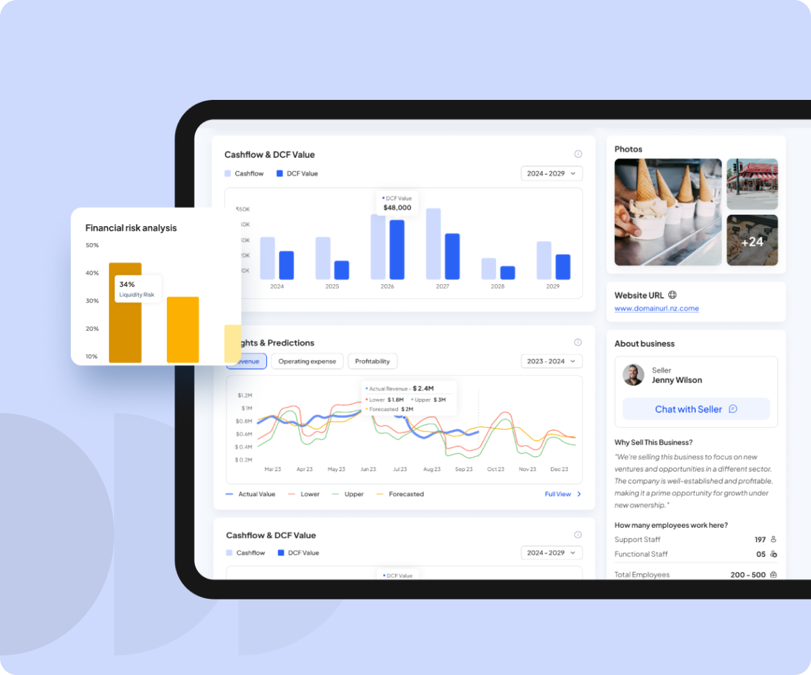

Designing a smarter
way to buy and sell businesses.
Scale is a digital business marketplace designed for the New Zealand market, connecting buyers and sellers while reducing the friction and dependency traditionally associated with intermediaries.

Focus
Moving from intermediary-led transactions to a digital marketplace.
Buying or selling a business involves valuation, financial analysis, due diligence, negotiation and funding. The existing process relied heavily on intermediaries, adding cost and friction.
Scale's opportunity was to bring buyers and sellers together directly while providing the financial intelligence needed to make informed decisions.
The business model was built around a 1–2% transaction commission, with additional revenue opportunities through premium subscriptions and related services.
The goal wasn't to build another marketplace. It was to make business transactions more direct, transparent and data-driven.
A marketplace could connect people. It couldn't make the decision for them.
Our research showed that the biggest opportunity wasn't simply helping users discover businesses. Buyers also needed confidence in what they were evaluating.
They needed to understand:
- Is this business worth the asking price?
- What is its financial potential?
- What are the risks?
- What could the ROI look like?
Market research also highlighted significant friction around business-sale conversion and due diligence.
A simple progression became the product spine.
I structured the product around a simple progression:
Discover
Find relevant businesses.
Evaluate
Understand the business, financials and opportunity.
Validate
Use valuation, ROI and AI-powered analysis to assess the opportunity.
Connect
Request access and communicate with sellers.
Transact
Progress toward offers, funding and acquisition.
This became the product spine that connected individual features into one experience.
Four roles. One shared marketplace.
Scale served four distinct roles. Rather than designing one generic experience, we used role-based journeys to surface the information and actions relevant to each user.
Buyers
Discover businesses and evaluate investment opportunities.
Sellers
Create listings, present their business and manage buyer access.
Funders
Review financial assistance requests.
Admins
Monitor users, listings, premium activity, loans and commissions.
Financial intelligence became part of the core product.
One of our key product decisions was to make financial analysis part of the marketplace experience rather than treating it as a separate tool.
Marketplace
Business discovery and listings.
Financial Intelligence
Financial performance and valuation.
AI
Predictive and scenario analysis.
Decision Support
ROI and DCF calculations.
Communication
Controlled information sharing.
Funding
Financial assistance.
The original product scope included AI-powered valuation, scenario analysis, ROI, predictive analysis and funding support.
AI wasn't added as a feature. It solved a product problem.
The key question was: Where can AI reduce uncertainty in a high-value financial decision?
We designed AI capabilities around:
- Business valuation
- Scenario analysis
- Revenue and profitability prediction
- Risk insights
- ROI
- Financial analysis
- Generative business descriptions
Financial data could be transformed into understandable insights to help buyers move from raw information to a clearer decision.
The product documentation also defined predictive insights around cash flow, ROI, DCF, revenue, expenses and profitability.
Designing the moments that move a transaction forward.
Guided business listing
Selling a business involves a large amount of information. We designed a guided listing experience that progressively collected business details, financial information and media rather than presenting sellers with an overwhelming form.
Intelligent evaluation
Buyers could use financial data, AI insights and ROI tools to understand the potential of a business.
Controlled access
Sellers could control when deeper business information became available, balancing transparency with confidentiality.
Premium intelligence
Advanced AI and financial capabilities were positioned within a premium subscription, connecting product value directly to monetisation.
Lead Product Designer.
I owned the product experience end-to-end across a three-designer team.
Discovery
Stakeholder discovery · Customer insight synthesis · Domain exploration
Strategy
Competitive analysis · Product opportunities · Feature prioritisation
UX
Information architecture · Role-based journeys · User flows · Wireframes
Product innovation
AI feature definition · Financial workflows · Decision-support concepts
Execution
Visual design · Prototyping · Design reviews · Stakeholder presentations
AI as a design thinking partner.
I also used AI as a design thinking partner, not as a replacement for product judgment.
Using ChatGPT, Claude and Gemini, I explored:
- Research synthesis
- Competitive analysis
- Financial scenarios
- UX opportunities
- Content
- Financial feature concepts
This helped accelerate exploration and challenge assumptions while product decisions remained grounded in business objectives and user needs.
Measure the transaction, not just the interface.
Scale did not have mature production analytics available to us, so I would not present fabricated post-launch results. Instead, I established a framework for measuring the product.
Proposed North Star
Supporting metrics
Marketplace
Buyer registrations · Active listings · Buyer enquiries
Activation
Business viewed · Financial analysis completed · AI insight usage
Monetisation
Premium conversion · Subscription engagement
Transaction
Buyer–seller connections · Offers initiated · Completed transactions
From a marketplace to a transaction ecosystem.
Scale brought together:
The result was a product designed not only to help people find businesses, but to understand their value, evaluate the opportunity and progress toward a transaction.
The client response documented in the project materials was positive, particularly around the overall customer experience.